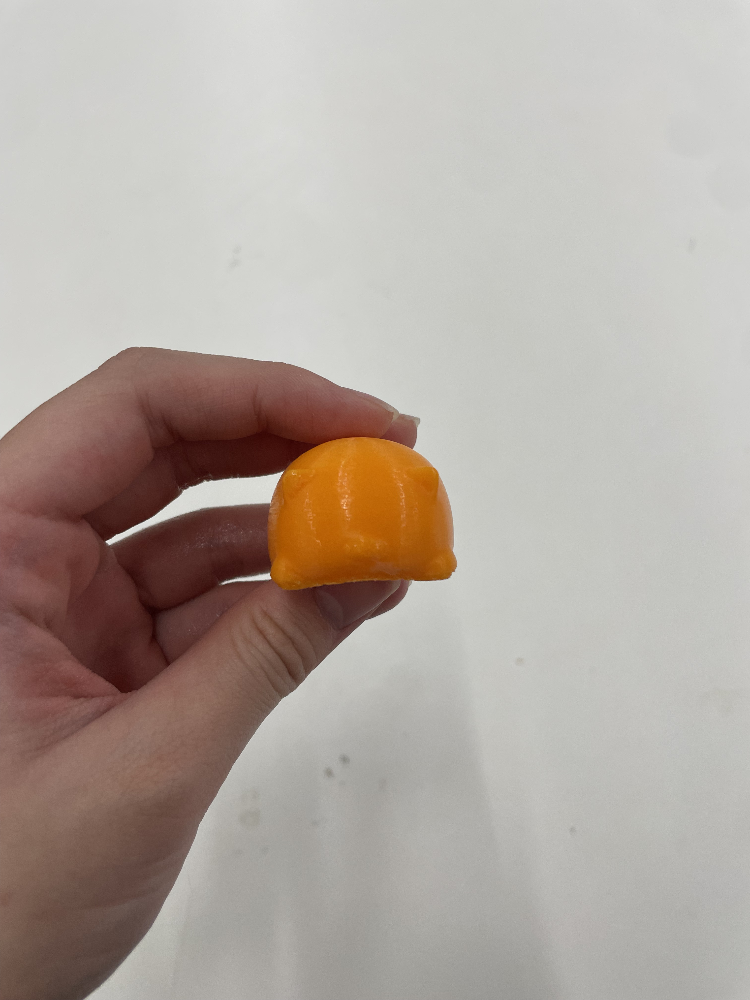
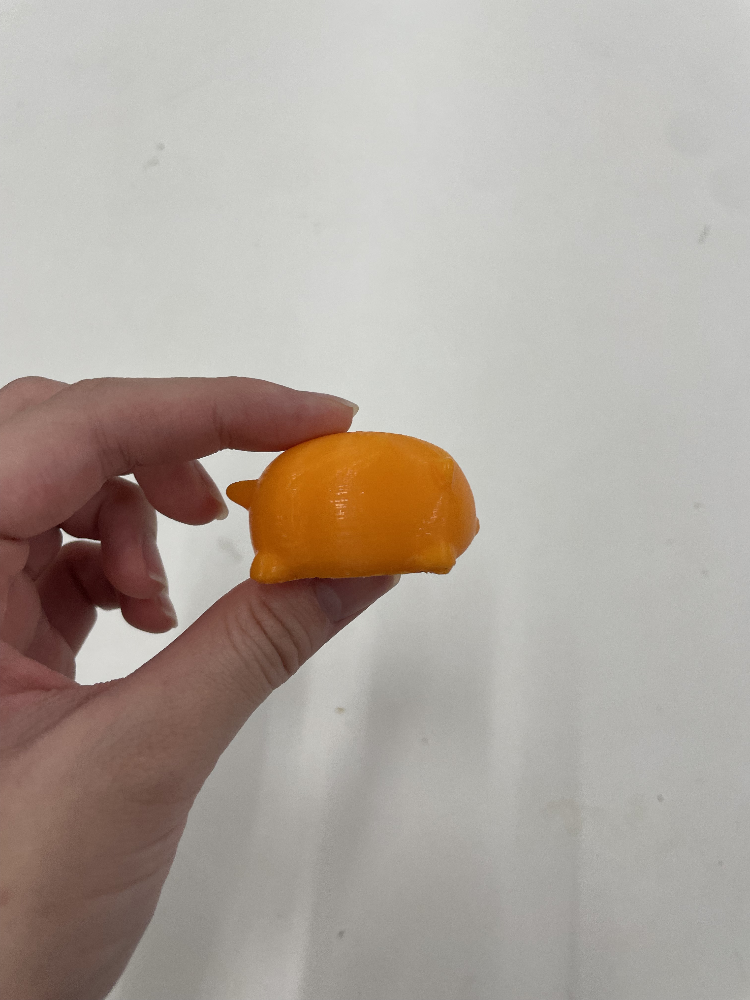
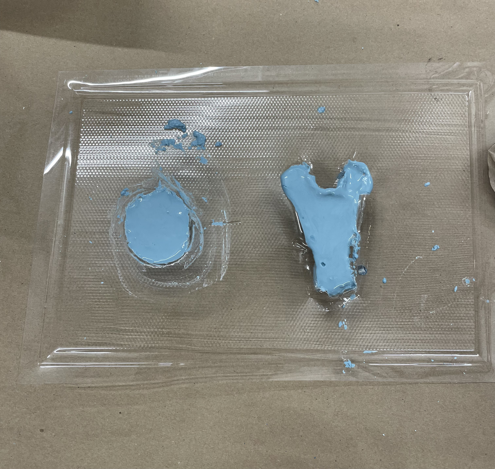
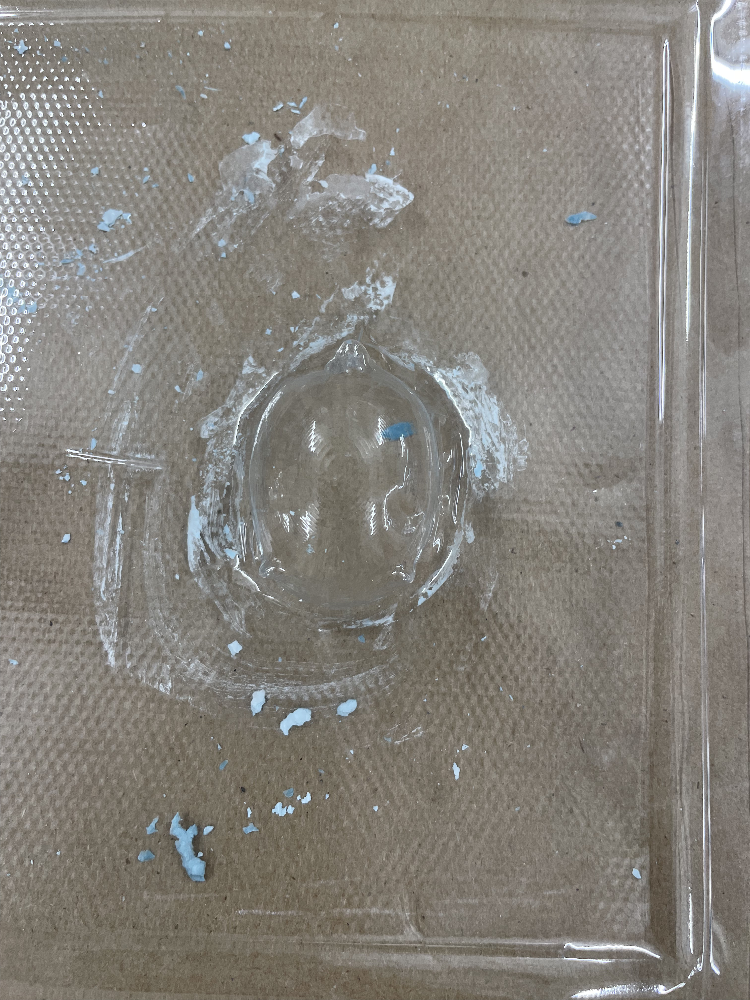
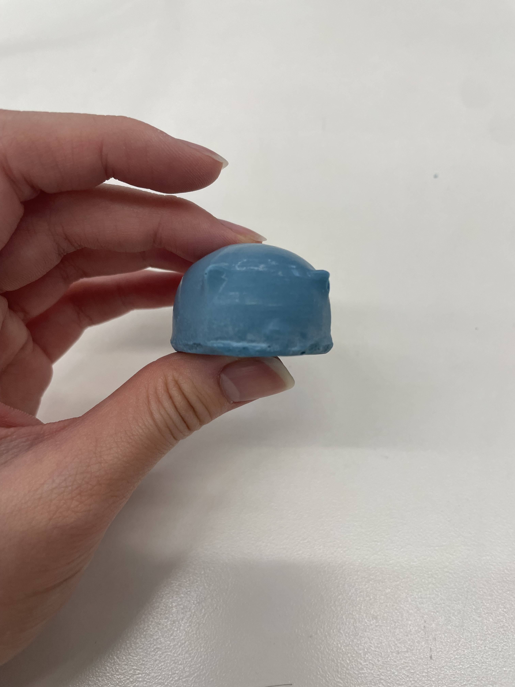

<div class="textcontainer">
<p class="margin"> </p>
<h3>Week 8: CNC Milling</h3>
<h4>Assignment: Make Something With CNC</h4>
<p> For this week's assignment, I wanted to make something I could use. I landed on making a jewelry tray.
My inspiration for this week was an organic design. I went with a koi pond design.
</p>
<p> To create this project, I first modeled my design on Fusion.</p>
<iframe
src="https://a360.co/3WvybT2"
width="800"
height="600"
frameborder="0"
allowfullscreen>
</iframe>
<p> To do this, I drew the the shape of the pond, and then imported vector images of the koi fish onto my sketch. After, I
drew the other elements of the pond using Fusion's sketch tools.
</p>
<p> Next, I loaded my design into the CNC software and prepared it to be cut. After doing so, I noticed some issues with
extra lines on vector image fish, so, I went back and cleaned up my Fusion sketch. Then, I was ready to start CNCing.
</p>
<img src="koi_pond_wooden.jpg" alt="koi pond unsanded" style="width:600px" />
<p> After sanding: </p>
<img src="pond-thumbnail.jpg" alt="koi pond" style="width:600px" />
<p class = "margin"></p>
<p> Reflections: </p>
<p> Overall, I was happy with how the pond came out. I liked how the wood layering allowed for the water to be a different color
then the other elements in the design. In future iterations, I would probably scale the internal elements in the pond up a
little to allow them to cut a little cleaner (especially the water ripples, which I ended up sanding off) and smooth some of
the edges on the fin/tail design. I would also like to add more elements into the pond. </p>
<p class = "margin"></p>
<h4>Molding and Casting</h4>
<p> For the molding and casting portion of this week, I decided to 3D print my cat scan from week 5 and make a mold of it. </p>


<p> I decided to use vacuum forming to create a mold of the cat, and then I used plaster to cast it. </p>


<p> (Shared vacuum sheet with Kieran) </p>
<p> Here is the finished plaster cat! </p>

<p class = "margin"></p>
<p> Reflctions: </p>
<p> There are some small air bubbles on part of the design (like the ears and tails). Next time, I would try tapping the mold as
I was filling it to prevent air bubbles from forming. In addtion to this, I would be more carful when filling the mold as to not
overfill it too much since I ended up having to chisel and file some execess material off. And more generally, I think the shape
of the cat wasn't the best for a vacuum seal mold since it was difficult to get the little feet properly captured (maybe a
a silicon mold that wrapped around the whole figure would be better!). </p>
</div>